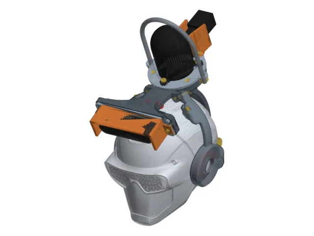
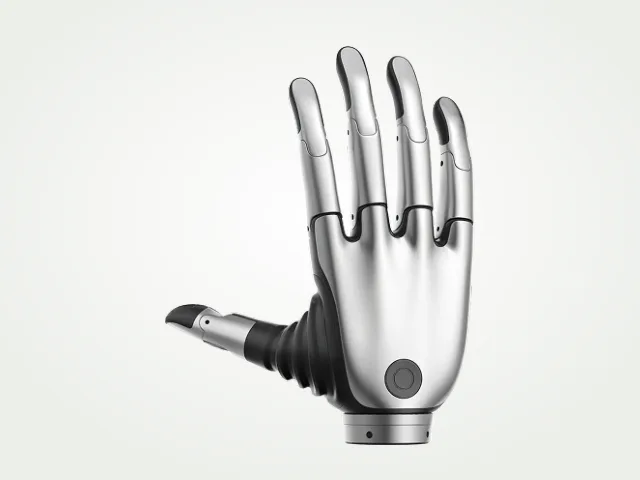
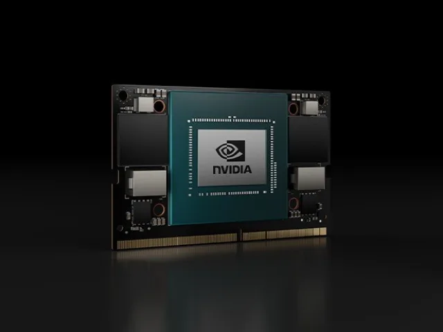
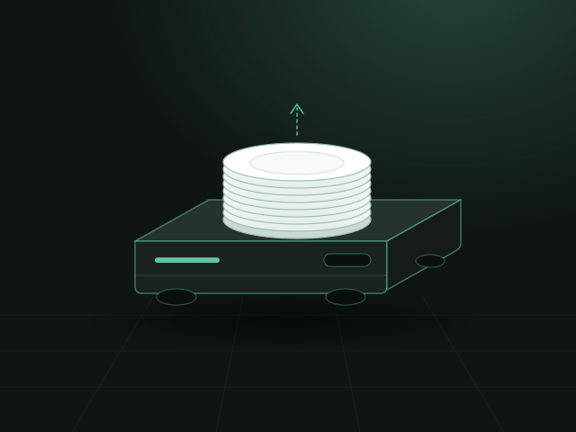
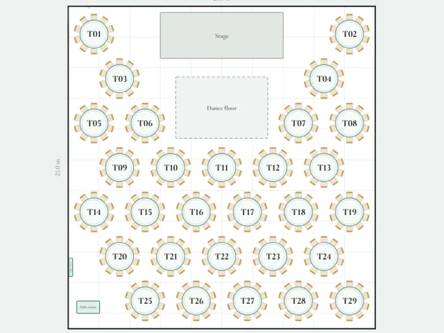

VATEL
VATELRobot
Unitree R1 humanoid: 26 DoF, 2 kg payload per arm
Image: Unitree Robotics
CDE4301 Innovation & Design Capstone · NUS
Humanoid Orchestration for Autonomous Banquet Setup
A humanoid robot that sets banquet tables. The banquet team plans the hall on an iPad or a computer; the Unitree R1 maps the real room with its lidar, then carries plates one at a time from an AGV to every set position.
Why
Banquet table setting requires handling diverse, fragile tableware across an environment purpose-built for human reach and access, where fixed automation is impractical and a separate task-specific robot per item type is uneconomical. VATEL develops and evaluates an autonomous perception-and-manipulation pipeline for a humanoid robot to transfer and place banquet tableware. The representative case is plate transfer from an AGV, a requirement from our industry partner, who is deploying the AGV. The approach is intended to generalise to other tableware handling tasks.
Pipeline
The banquet team opens the VATEL Planner on an iPad or a computer. It shows the whole banquet hall, segments out the tables and draws them on a 2-D map, where the team plans the arrangement and setup for the event.
When the arrangement is done, the planner sends the static map to the Unitree R1 humanoid: where each table is, how many sets of plates and cutlery each table needs, and the calculated position of every set.
The R1 navigates the hall autonomously from the planner's static map. Its onboard Hesai JT128 lidar maps the real room to find the exact location of each table, correcting the difference between the plan and the real arrangement. The robot updates the map and navigates to each set position.
Once the robot can navigate the whole hall and reach at least 80 % of the required workspace, it goes to the AGV plate-delivery area, where an AGV brings plates stacked from the kitchen. It takes one plate at a time off the stack and places it at its designated position. One plate per trip is a deliberate limit, set by the dexterous hands and the robot platform.
The task is complete when the plates are at their designated positions, with up to 10 % of all plates allowed to miss, and no plate broken.
Targets
≥ 80 %
of the required workspace reached by navigation
≥ 90 %
of plates at their designated positions; up to 10 % may miss
0
plates broken
1
plate per trip, set by the dexterous hands and the robot platform
Platform
Unitree R1 humanoid: 26 DoF, 2 kg payload per arm
Image: Unitree Robotics

Hesai JT128 lidar and Intel RealSense D435if depth camera, on a custom clamp-on sensor helmet
Our sensor helmet, CAD render

BrainCo Revo 2 dexterous hands
Image: BrainCo

NVIDIA Jetson Orin
Image: NVIDIA (Jetson Orin NX module)

AGV with stacked plates, deployed by our industry partner
Illustration

Any web browser, on an iPad or a computer: open it
The VATEL Planner
Documentation